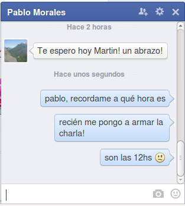

Ingeniería para ganar el mundial
Una charla para cabuleros
y futuros ingenieros

A modo de pedido de disculpas
Esa loca gente creativa
Los científicos estudian lo que es. Los ingenieros crean lo que nunca ha sido.


Lo que nunca ha sido
No era común en Argentina
Pero ahora hay condiciones propicias
Phasety, creada por ingenieros aprendiendo lo que la universidad no les enseñó
De paso, bonito el logo ¿no?
Pero, ¿qué es lo que no se nos enseña(ba)?
- Una ingenieria más integral: tecnología + $$$ + ambiente + sociedad
- No imaginarse empleado como única posibilidad
- Que la ingenieria no es sólo saber resolver problemas
(y sí, a programar bien)
Está clarísimo!
#NOT
Los que "resuelven problemas"
Como profesor siento una responsabilidad: enseñarles a pensar para resolver problemas. Después de todo eso es un ingeniero.
¿Sólo eso es un ingeniero? Ponele:
- Sabemos sacar cuentas y usar (con suerte crear) tecnología
- Pero...
Los problemas
- ¿Cuáles problemas debemos (intentar) resolver?
- ¿Qué tecnologías hacen más falta y están a nuestro alcance?

Ojo, no hay que ser hippie
No se puede vivir del amor
¿Un ejemplo?

La ventaja del software
(y la electrónica digital)
Cabeza de ratón vs Cola de león
¿Emprender o vender la fuerza de trabajo?
Pros | Contras | |
cola | Sueldo seguro Sólo tecnología Sci-fi enabled | Poco decidís vos (ni tu jefe) ¿Qué tan seguro es? ¿No querés más que un sueldo? |
cabeza | Elegís el qué Y el cómo No hay techo Creas laburo! | El piso puede ser más bajo Quizás no hagas naves espaciales ¡Altas responsabilidades, Batman! |
Igual, no todo es blanco o negro
- Podés trabajar en una empresa chica
- Podés ser un especialista y vender servicios/capacitación
- O hacé lo que quieras, pero sé groso y valorate
Lo importante (IMHO)
- Valorar tu libertad profesional
- y tu futuro
- Capacitate para lo que te gusta, la facu es sólo un primer paso
- Aprovechá tu PPS y PI
- Y aprendé a programar Python! ;-)
Empresas de base tecnológica
"EBT son aquellas empresas en las que parte o todo el proceso productivo sucede en el cerebro de sus trabajadores."
- Es mucho más fácil en software y electrónica digital
- Hay mucha ayuda: incubadoras, subsidios, prestamos blandos
- Mejor si te juntás con quienes te complementan
- ¡Hay muchos problemas por resolver!
- ¡Mucha satisfacción y plata esperándote!
(Pero no es para cualquiera, recorcholis, Batman)
Che, a todo esto, ¿la charla no era sobre el mundial?

Igual... el pibe la tiene clara
Después de los entrenamientos, programo en Python

Quédense traquis, lo ganamos

Muchas gracias